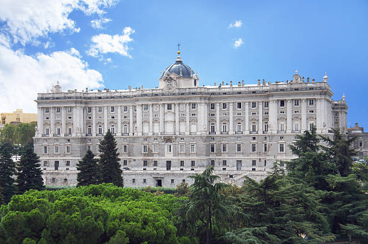
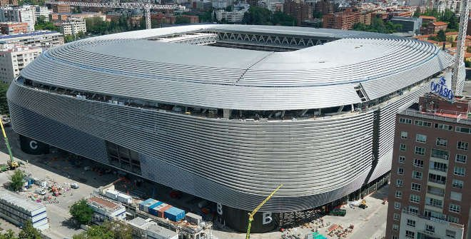

Prêt à vous évader vers des horizons extraordinaires ?
La plus grande ville de l’Espagne, Madrid est une ville très ancienne et cosmopolite,
qui a une grande influence sur la culture, l’économie, la politique et les sciences.
Il est située sur la rivière Manzanares, dans la partie centrale du pays
Madrid a une population d’environ 3,3 millions d’habitants dans la ville, et plus de 6,5 millions dans l’agglomération.
Madrid est la capitale de l’Espagne, une ville dynamique et cosmopolite, qui offre de nombreux lieux touristiques à voir.
Voici quelques-uns des plus emblématiques
Le Musée du Prado
c’est l’un des plus grands musées d’art au monde, qui abrite une collection exceptionnelle de peintures espagnoles, italiennes, flamandes et françaises, du XIVe au XIXe siècle.
Vous pourrez y admirer des chefs-d’œuvre de Velázquez, Goya, Bosch, Le Greco, Rubens, Titien, etc
Le Palais Royal
c’est la résidence officielle de la famille royale espagnole, bien qu’elle ne soit utilisée que pour des cérémonies officielles.
C’est le plus grand palais d’Europe occidentale, avec plus de 3 000 pièces, décorées avec faste et élégance.
Vous pourrez y visiter les salons d’apparat, la salle du trône, la chapelle royale, l’armurerie royale, etc


La Plaza Mayor

c’est la place principale de Madrid, entourée de bâtiments historiques et d’arcades.
Elle a été le théâtre de nombreux événements importants, comme des fêtes, des corridas,
des exécutions, etc. Au centre, se trouve la statue équestre du roi Philippe III.
Sur la place, vous pourrez profiter de l’ambiance animée, des terrasses de cafés et des spectacles de rue.
Conçue dans un style baroque, elle mesure 129 mètres de long et 94 mètres de large.
Cet édifice, construit en 1590, est le plus important de la place. À l’origine, il abritait la boulangerie
la plus importante de Madrid. Sa façade a été décorée par Carlos Franco.
Le Temple de Debod

Le Temple de Debod, également connu sous le nom de Temple d’Amon, est un trésor emblématique de Madrid.
datant du IIe siècle av. J.-C., est un authentique temple égyptien offert à l’Espagne par l’Égypte en 1968. Il était à l’origine situé à Debod, en Égypte, et était dédié aux dieux égyptiens Isis et Amon.
Construit sur ordre du roi Adijalamani de Méroé, le temple servait de lieu de culte pour ces divinités.
À l’origine, il était situé à plusieurs kilomètres au sud d’Assouan, en Égypte, mais il a été démantelé et reconstruit à Madrid.
Le temple présente deux étages, avec notamment une maquette intéressante au niveau supérieur, illustrant tous les temples qui existaient en Nubie.
La Cathédrale de l’Almudena

c’est la cathédrale de Madrid, dédiée à la Vierge de l’Almudena, patronne de la ville.
Sa construction a duré plus d’un siècle, du XIXe au XXe siècle, ce qui explique son mélange de styles architecturaux :
néoclassique à l’extérieur, néogothique à l’intérieur, et néoroman dans la crypte. Elle a été consacrée par le pape Jean-Paul II en 1993
Le stade Santiago Bernabéu

est le stade de football du Real Madrid, un des clubs les plus prestigieux au monde.
Il a été inauguré en 1947 et porte le nom de Santiago Bernabéu, l’ancien président du club.
Il a une capacité de plus de 84 000 spectateurs et a accueilli des événements majeurs comme la finale de la Coupe
du monde 1982 ou la finale de la Ligue des champions 2010. Il est situé dans le centre de Madrid, sur le Paseo de la Castellana, et est desservi par le métro.
Vous pouvez visiter le stade et son musée, qui retrace l’histoire et les trophées du Real Madrid